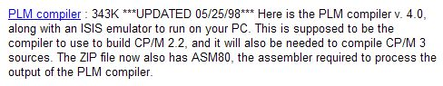
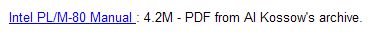
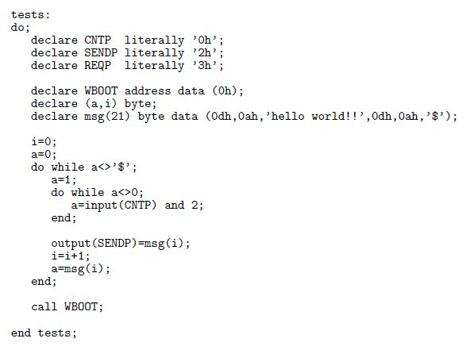
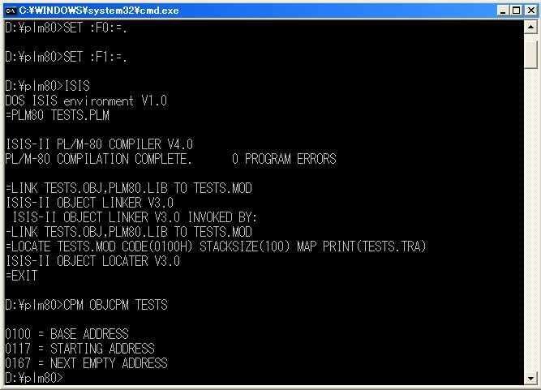
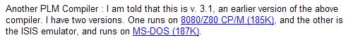
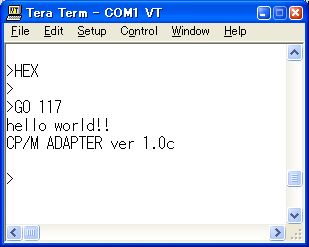

|
PLM80 |
組み込み専用の言語でありコンパイラです。
CP/Mではなく ISIS で動いていたものですが MSDOS で動く ISISエミュレータで動かせます。
他の言語ならインラインアセンブラで書くかアセンブラの出力を連結してしたものも、PLM
なら書けると思います。
しかしBASIC言語のような便利さはありませんので自分で書いて揃える必要があります。
アセンブリ言語で書いていたものを高級言語で書きたい場合には80系特有のIO操作も番地を
指定しての読み書きやプログラムの呼び出しも標準的な記述で可能です。
このツールの入手は http://www.cpm.z80.de/ の下の所からできます。
|
 |
言語の解説はこちらにあります。
|
 |
|
使い方 |
|
 |
本コンパイラはCP/Mプログラムでのコンソールの入出力のようなものは準備していませんので
アセンブリ言語で書き下ろすようなプログラムを例に書いてみました。
PLM80のプログラムは最後にHALTを実行して停止するのでCP/Mアダプタに戻るために
call WBOOT
を付けています。
|
 |
コマンドを個別に実行すると上のようになります。 TESTS.PLM から TESTS.HEX を得る CC.BAT を作ってみました。
|
 |
PLM80コンパイラが最終的に出力したファイルをCP/Mの COM 形式に変換しますが、これには OBJCPM .COM が必要です。 これはCPMプログラムです上のところの 8080/Z80 CP/M (185K) にあります。
|
CC.BAT |
| CC.BAT |
SET :F0:=. SET :F1:=. ISIS < CC.SUB CPM OBJCPM TESTS BIN2HEX TESTS.COM 100 > TESTS.HEX |
ISIS の実行にあたっては環境変数の設定が必要です。
| CC.SUB |
PLM80 TESTS.PLM LINK TESTS.OBJ,PLM80.LIB TO TESTS.MOD LOCATE TESTS.MOD CODE(0100H) STACKSIZE(100) MAP PRINT(TESTS.TRA) EXIT |
|
 |
PLM80の出力はCP/Mのシステムコールを呼ぶことはないので何の問題もなく実行できます。